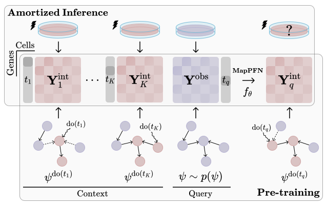
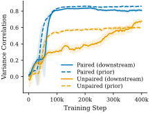
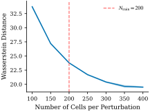
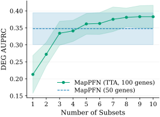

MapPFN: Learning Causal Perturbation Maps in Context
Abstract
Planning effective interventions in biological systems requires treatment-effect models that adapt to unseen biological contexts by identifying their specific underlying mechanisms. Yet single-cell perturbation datasets span only a handful of biological contexts, and existing methods cannot leverage new interventional evidence at inference time to adapt beyond their training data. To meta-learn a perturbation effect estimator, we present MapPFN, a prior-data fitted network (PFN) pre-trained on synthetic data generated from a prior over causal perturbations. Given a set of experiments, MapPFN uses in-context learning to predict post-perturbation distributions. Pre-trained on in silico gene knockouts alone, MapPFN identifies differentially expressed genes on par with models trained on real single-cell data. Fine-tuned, it consistently outperforms baselines across downstream datasets.
The Problem
- Perturbation effects are context-dependent
- Combinatorial space infeasible to cover experimentally
- Existing methods retrain and tune per dataset
- No method conditions on interventional data
Our Solution
Pre-training on Synthetic Data
A prior-data fitted network (PFN) that meta-learns causal perturbation prediction.
Interventional Context Conditioning
Leverage observed interventions to improve identifiability of causal structure.
In-Context Learning (ICL)
Adapt to unseen biological contexts and gene sets at inference time.
Method
Draw causal model $\psi$ from prior $p(\psi)$, generate $\mathbf{Y}^{\text{obs}}$ and build context $\mathcal{C} = \{(t_k, \mathbf{Y}^{\text{int}}_k)\}_{k=1}^K$ by intervening with treatments $t_k \in \mathcal{T}$. MapPFN uses a Multimodal Diffusion Transformer (MMDiT) to approximate the posterior predictive distribution:

MapPFN overview. During pre-training, synthetic causal models are drawn to generate observational and interventional distributions. MapPFN meta-learns to map between pre- and post-perturbation distributions across many causal structures. At inference, it predicts cell-level post-perturbation distributions in one forward pass through amortized inference.
Synthetic Biological Prior
- Preferential attachment gene regulatory network (GRN) generator with sparse, directed, modular graphs
- Simulation of gene expression dynamics and in silico knockouts via stochastic differential equations (SDEs)
- Counterfactual (paired) prior improves identifiability and downstream performance

Training convergence: paired vs. unpaired prior.
Benchmark Results
A single pre-trained MapPFN adapts across datasets. Zero-shot, it recovers differentially expressed genes on par with baselines trained on real data. MMD ×10−3. Mean ± std over 10 seeds.
| Cell Line | Method | MMD ↓ | RMSE ↓ | PDS ↓ | AUPRC ↑ |
|---|---|---|---|---|---|
| Melanoma | CPA | 140.09 ±0.35 | 0.13 ±0.00 | 0.49 ±0.01 | 0.04 ±0.00 |
| CondOT | 7.11 ±0.12 | 0.10 ±0.00 | 0.06 ±0.01 | 0.34 ±0.05 | |
| MFM | 7.28 ±0.13 | 0.10 ±0.00 | 0.09 ±0.02 | 0.28 ±0.04 | |
| CellFlow | 7.16 ±0.17 | 0.10 ±0.00 | 0.41 ±0.01 | 0.10 ±0.02 | |
| STATE | 7.82 ±0.09 | 0.08 ±0.00 | 0.07 ±0.02 | 0.33 ±0.04 | |
| MapPFN (pre-trained) | 10.07 ±0.19 | 0.13 ±0.00 | 0.17 ±0.01 | 0.34 ±0.02 | |
| MapPFN (fine-tuned) | 7.84 ±0.14 | 0.10 ±0.00 | 0.03 ±0.01 | 0.38 ±0.03 | |
| Leukemia | CPA | 78.74 ±1.27 | 0.17 ±0.00 | 0.50 ±0.02 | 0.15 ±0.01 |
| CondOT | 26.51 ±0.68 | 0.27 ±0.01 | 0.54 ±0.04 | 0.14 ±0.01 | |
| MFM | 105.64 ±0.73 | 0.71 ±0.00 | 0.51 ±0.02 | 0.16 ±0.01 | |
| CellFlow | 14.55 ±0.46 | 0.17 ±0.00 | 0.50 ±0.01 | 0.16 ±0.01 | |
| STATE | 15.28 ±0.44 | 0.17 ±0.00 | 0.47 ±0.03 | 0.17 ±0.01 | |
| MapPFN (pre-trained) | 191.88 ±1.46 | 0.78 ±0.00 | 0.49 ±0.01 | 0.16 ±0.01 | |
| MapPFN (fine-tuned) | 12.24 ±0.58 | 0.15 ±0.00 | 0.42 ±0.03 | 0.18 ±0.01 |
Test-Time Adaptation
Predictions improve beyond the number of cells seen during pre-training. MapPFN scales to larger gene sets at inference time through test-time augmentation.

Predictions improve beyond the number of cells seen during pre-training.

Scales to larger gene sets at inference time through test-time augmentation.
Ablations
Both interventional context and paired prior are critical. Melanoma. MMD ×10−3.
| Configuration | MMD ↓ | RMSE ↓ | PDS ↓ | AUPRC ↑ |
|---|---|---|---|---|
| MapPFN | 10.07 | 0.13 | 0.17 | 0.34 |
| − paired prior | 21.84 | 0.23 | 0.20 | 0.21 |
| − interventional context | 15.88 | 0.20 | 0.20 | 0.13 |
Meta-learning on synthetic biological priors enables context-adaptive virtual cell models through in-context learning.
Get Started
Download Datasets
Access the synthetic and real-world perturbation datasets used for pre-training and evaluation.
BibTeX
@article{sextro2026mappfn,
title = {{MapPFN}: Learning Causal Perturbation Maps in Context},
author = {Sextro, Marvin and K\l{}os, Weronika and Dernbach, Gabriel},
journal = {arXiv preprint arXiv:2601.21092},
year = {2026}
}